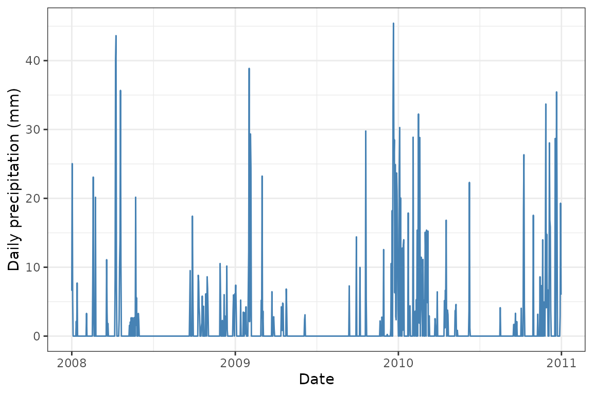
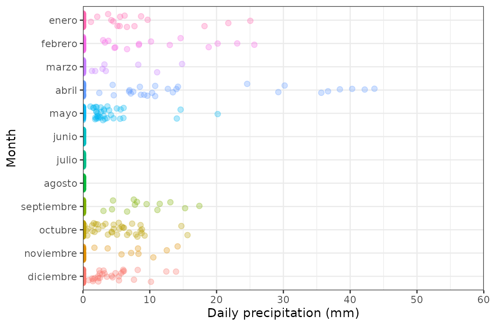
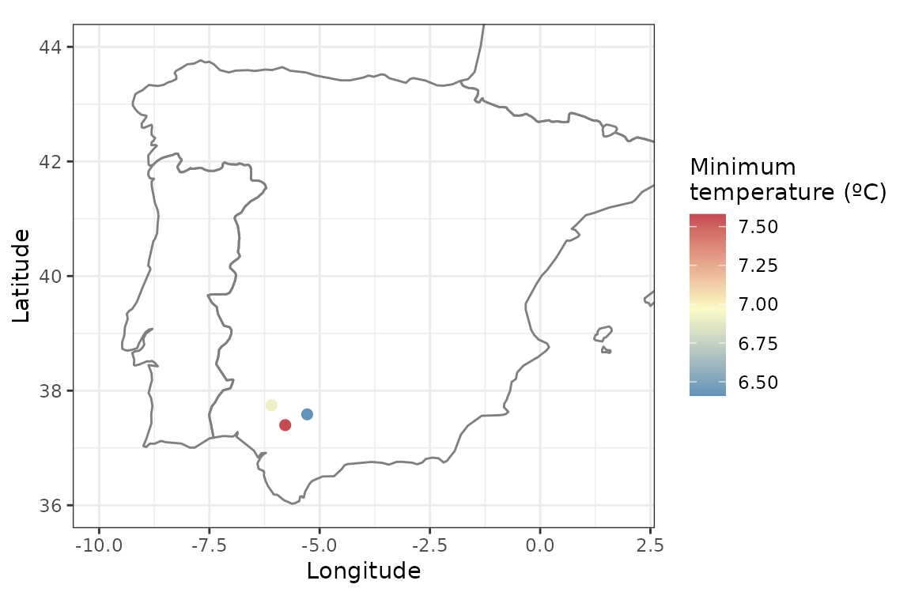

Analysing the climate at spatial points for a given period
Source:vignettes/points-df-mat-sf.Rmd
points-df-mat-sf.RmdWith easyclimate you can easily download daily climate
data for a given set of points or polygons within Europe. To download
and install the latest version of easyclimate from github
follow the instructions in https://github.com/VeruGHub/easyclimate
In this tutorial we will work through the basics of using easyclimate
with coordinate points. You can enter coordinates as a
data.frame, matrix, sf or
SpatVector object. At the end we will have a data frame
with climate variables for each point.
Example 1: Introducing coordinates as a data frame
First, specify longitude and latitude coordinates in a data frame
with the column names lon and lat. Here we are
simulating coordinates for three random sites in southern Spain
library(easyclimate)
library(ggplot2)
library(dplyr)
coords <- data.frame(
lon = rnorm(3, mean = -5.36, sd = 0.3),
lat = rnorm(3, mean = 37.40, sd = 0.3)
)
ggplot() +
borders(regions = c("Spain", "Portugal", "France")) +
geom_point(data = coords, aes(x = lon, y = lat)) +
coord_fixed(xlim = c(-10, 2), ylim = c(36, 44), ratio = 1.3) +
xlab("Longitude") +
ylab("Latitude") +
theme_bw()Now, download the climatic data for the selected locations. All you
have to do is use the function get_daily_climate,
specifying the period (e.g. 2008-05-25 for a single day or
2008:2010 for several years), and the variables to be
downloaded (precipitation Prcp, minimum temperature
Tmin or maximum temperature Tmax).
Sys.time() # to know how much time it takes to download
## [1] "2024-11-21 19:08:00 CET"
daily <- get_daily_climate(
coords = coords,
period = 2008:2010,
climatic_var = c("Prcp","Tmin","Tmax"))
Sys.time()
## [1] "2024-11-21 19:10:58 CET"
kable(head(daily))| ID_coords | lon | lat | date | Prcp | Tmin | Tmax |
|---|---|---|---|---|---|---|
| 1 | -5.780013 | 37.39833 | 2008-01-01 | 6.58 | 3.20 | 14.12 |
| 1 | -5.780013 | 37.39833 | 2008-01-02 | 25.05 | 8.59 | 15.38 |
| 1 | -5.780013 | 37.39833 | 2008-01-03 | 5.56 | 8.27 | 14.31 |
| 1 | -5.780013 | 37.39833 | 2008-01-04 | 0.00 | 5.23 | 14.00 |
| 1 | -5.780013 | 37.39833 | 2008-01-05 | 0.00 | 5.58 | 14.80 |
| 1 | -5.780013 | 37.39833 | 2008-01-06 | 0.00 | 11.54 | 15.49 |
Here we extract different components of the date.
daily <- daily |>
mutate(
date = as.Date(date),
month = months(date),
year = format(date, format = "%y")
) Finally, you can visualize the daily climate results. For example, let’s plot the precipitation for one of the sites:
clim_site1 <- daily |>
filter(ID_coords == 1)
ggplot(clim_site1) +
geom_line(aes(x = date, y = Prcp), colour = "steelblue") +
labs(x = "Date", y = "Daily precipitation (mm)") +
theme_bw()
Or calculate the daily mean temperature and plot it against
tmin and tmax:
library(tidyr)
temp_long <- daily |>
mutate(Tmean = (Tmin + Tmax) / 2) |>
pivot_longer(
cols = c("Tmin", "Tmax", "Tmean"),
names_to = "temp_vars",
values_to = "temp_values")
ggplot(temp_long, aes(x = factor(ID_coords), y = temp_values,
fill = temp_vars, color = temp_vars)) +
geom_violin(size = 1, alpha = .7) +
scale_fill_manual(values = c("#C54A52", "#FAFBC5", "#4B8AB8")) +
scale_color_manual(values = c("#C54A52", "#FAFBC5", "#4B8AB8")) +
ylab("Temperature (ºC)") + xlab("") +
theme_bw()
ggplot(temp_long, aes(x = date, y = temp_values, color = temp_vars)) +
geom_point(alpha = .3) +
scale_color_manual(name = "Variables",
values = c("#C54A52", "#FAFBC5", "#4B8AB8"),
guide = guide_legend(override.aes = list(alpha = 1))) +
ylab("Temperature (ºC)") + xlab("Date") +
theme_bw()
Example 2: Introducing coordinates as a matrix
easyclimate handles different input data, try now with
matrices!
Here we are retrieving daily precipitation data for a single year (2008).
coords_mat <- as.matrix(coords)
Sys.time()
## [1] "2024-11-21 19:11:00 CET"
mat_prcp <- get_daily_climate(
coords = coords_mat,
period = 2008, # single year
climatic_var = "Prcp"
)
Sys.time()
## [1] "2024-11-21 19:11:13 CET"
kable(head(mat_prcp))| ID_coords | lon | lat | date | Prcp |
|---|---|---|---|---|
| 1 | -5.780013 | 37.39833 | 2008-01-01 | 6.58 |
| 1 | -5.780013 | 37.39833 | 2008-01-02 | 25.05 |
| 1 | -5.780013 | 37.39833 | 2008-01-03 | 5.56 |
| 1 | -5.780013 | 37.39833 | 2008-01-04 | 0.00 |
| 1 | -5.780013 | 37.39833 | 2008-01-05 | 0.00 |
| 1 | -5.780013 | 37.39833 | 2008-01-06 | 0.00 |
mat_prcp <- mat_prcp |>
mutate(
date = as.Date(date),
month = months(date),
year = format(date, format = "%y")
) |>
relocate(lon, lat, date, year, month, Prcp)
ggplot(mat_prcp, aes(x = date, y = Prcp, color = Prcp)) +
geom_point() +
scale_color_continuous(name = "Precipitation (mm)") +
scale_y_continuous(expand = c(0, 0)) +
coord_cartesian(ylim = c(0, 60)) +
ylab("Daily precipitation (mm)") + xlab("Date") +
theme_bw()
month_name <- format(ISOdate(2021, 1:12, 1), "%B")
mat_prcp |>
mutate(month = factor(month, rev(month_name))) |>
ggplot(aes(x = month, y = Prcp, color = month)) +
geom_jitter(size = 2, alpha = .3, width = .3, show.legend = FALSE) +
scale_y_continuous(expand = c(0,0)) +
coord_flip(ylim = c(0, 60)) +
ylab("Daily precipitation (mm)") + xlab("Month") +
theme_bw()
Example 3: Introducing coordinates as simple feature objects
Here we introduce coordinates as a sf object, and
retrieve minimum temperature for a single day (1 January 2001).
library(sf)
coords_sf <- st_as_sf(
coords,
coords = c("lon", "lat")
)
sf_tmin <- get_daily_climate(
coords = coords_sf,
period = "2001-01-01", # single day
climatic_var = "Tmin"
)
ggplot() +
borders(regions = c("Spain", "Portugal", "France")) +
geom_point(data = sf_tmin, aes(x = lon, y = lat, color = Tmin), size = 2) +
coord_fixed(xlim = c(-10, 2), ylim = c(36, 44), ratio = 1.3) +
scale_color_gradient2(name = "Minimum\ntemperature (ºC)",
low = "#4B8AB8", mid = "#FAFBC5", high = "#C54A52",
midpoint = mean(sf_tmin$Tmin)) +
ylab("Latitude") + xlab("Longitude") +
theme_bw()
Learn more
Now you know how to obtain a data frame with different climatic
variables with easyclimate, using point coordinates in
different formats and downloading data for multiple locations and
periods. Check out this other
vignette if you need to extract the data of a complete area.